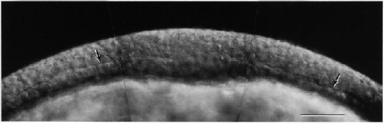

Modified from: Kimmel et al., 1955. Developmental Dynamics 203:253-310. Copyright © 1995 Wiley-Liss, Inc. Reprinted only by permission of Wiley-Liss, a subsidiary of John Wiley & Sons, Inc.
Fig. 13. The dorsal side of the blastoderm in a midgastrula embryo, at the 75%-epiboly stage. Nomarski optics. We positioned the embryo with its vegetal pole up, slightly flattened it between coverslips, and focused to obtain this optical section roughly midway between the animal and vegetal poles. Hence the view here is along the embryonic axis with midline structures at the center. The cellular blastoderm, above, covers the yolk cell, below. The EVL, vanishingly thin at this stage, is invisible (but easily visible in surface view). The arrows indicate Brachet's cleft, the distinctive boundary between the epiblast and hypoblast. The epiblast seems to be a multilayer of cells of nearly uniformly thickness, but actually at this time it must be forming a single-cell layered pseudostratified epithelium (Papan and Campos-Ortega, 1994). The hypoblast is sandwiched between the epiblast and YSL. Away from the dorsal midline (e.g. in the region near the arrows) the paraxial hypoblast looks to be a monolayer of cuboidal cells. Specifically in the region of the midline Brachet's cleft is less distinct, the axial hypoblast is thickened, and it might consist of more than a single cell layer. Later, axial hypoblast will contribute to both the mesoderm (e.g. the notochord) and endoderm. Scale bar: 50 µm.

Figure 13